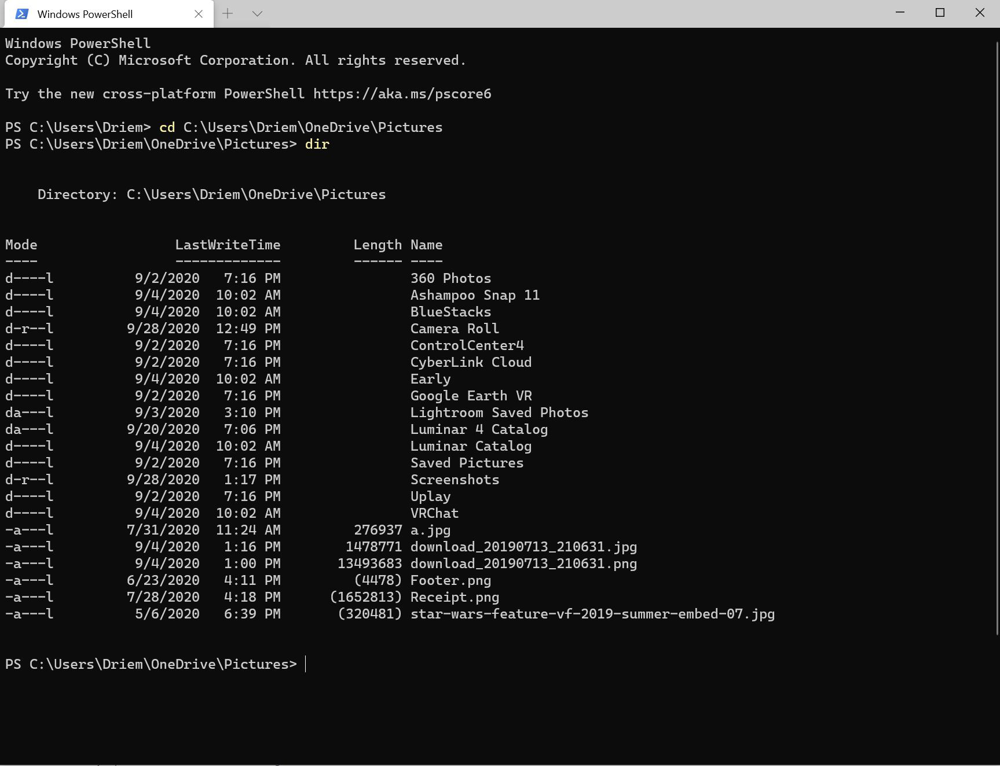
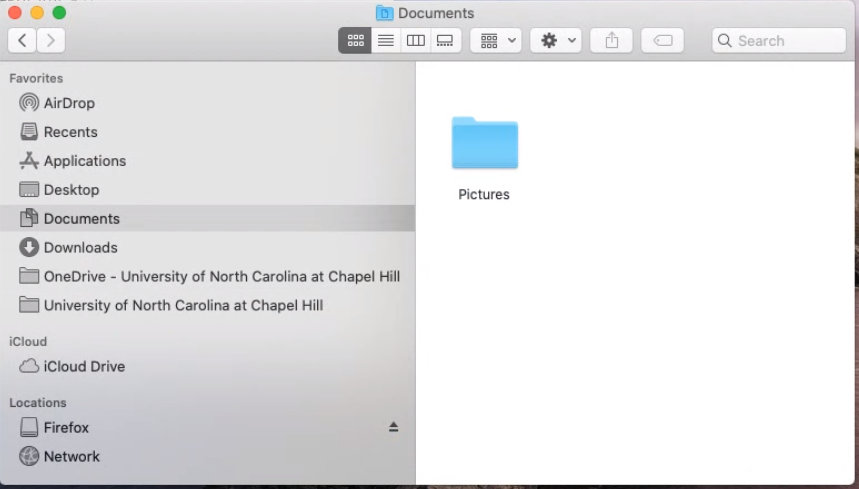

Chapter 2: Navigating Files and Folders
The Early Ages: The Command Line
Back in the days MS-DOS we navigated our computers using text commands. Imagine if the pioneers of modern technology had decided we should interact with our PCs using only machine readable language! Locating a file might have looked something like this:

Thankfully, cooler heads prevailed and we got something closer to the modern day command prompt.

At first glance, that image may be no less confusing than the theoretical one right above it.
Let's Zoom in and look more closely at one of the lines.
And let's zoom in a little more, to the first highlighted section, and add some labels.
 I'm sure throwing a lot of concepts at you, aren't I? You might be wondering if these lessons were a good idea!
I'm sure throwing a lot of concepts at you, aren't I? You might be wondering if these lessons were a good idea!This information will provide much needed context when we discuss navigating folders through the OS X finder. Don't worry, you won't have to use the command line.
PS: This is a Microsoft specific indicator. It stands for "PowerShell"- a modern Microsoft Command line- and indicates a new line in the terminal. You can safely ignore it and never think about it again. :)
Drive Letter: While it's not always the case, many systems have multiple hard drives. Here's an image from my PC- I have several!
In Microsoft operating systems, this letter is used to indicate which drive you're interacting with.
Directory: This is the meat of the topic at hand. Directories (often referred to as folders- more on that later) are the human readable structures we use to organize our files. Every file in your system is stored in a directory.
Lets look at our command again:
There are actually 3 directories here, because the drive letter is also a special kind of directory. Let's update the labels to reflect this.
With this in mind, a couple common vocabulary terms:
- Subdirectory
- This is a directory inside a directory. The phrase is very contextual as almost all directories are also subdirectories.
- Parent
- The directory above a directory. This is the inverse of subdirectory and is also contextual.
- Root
- The directory at the top of the hierarchal structure. The only directory without a parent.
So using our example:
- C: is the root directory
- Users is a subdirectory of the root C: directory
- Users is the parent of the Driem directory
- Which is another way of saying that Driem is a subdirectory of Users
Exercise
Directory relationships are sometimes displayed in a horizontal directory tree like the image above. Using the information you learned in this chapter, can you identify:- The root directory?
- Any one of the subdirectories?
- The parent to the subdirectory you named in question 2?
Introducing the GUI File Manager
(Note: GUI stands for Graphic User Interface- any user interface that users graphics and does not rely exclusively on text or symbols is a GUI).
When the switch from text based interfaces to GUI based systems began, it was quickly recognized that users would need a visual representation of the directory structure. After all, what's the point of these fancy graphics if you still require users to type "C:\Windows\System32\Pictures\Mypic.jpg" into a terminal?
As computers were mostly used in business environments, it was theorized that a file cabinet with folders would be an intuitive metaphor, and the "Desktop" was born. While the folder originates with Xerox, the system was popularized with the release of Windows 3.1. The system was so successful it remains in use in every mainstream operating system today.
Windows 3.1 File Manager- 1992
 macOS Catalina Finder- 2020
Navigating the macOS File Manager (Finder)
"Great, Nathan! There are GUIs everywhere! Why did we just spend a whole chapter on the command line?!"
I better keep an eye on this so called "Nathan".
He really seems to like referring to himself in the third person.
Have you ever saved a file and you KNEW for sure you saved it, but then couldn't find WHERE you saved it?
That's because you forgot- or did not know how to find- the file's location! (And do experienced techs still do this? Yes, all the time!)
In macOS, a typical save dialogue looks like this:
Look at the area I highlighted. That's a directory folder.
Apple tries to abstract the complete directory structure in an effort to simplify things, but in my opinion, this makes things more confusing in the long run. Watch what happens if I click on the down arrow to the right of the "Documents" folder.

Depending on your screen size, that may be hard to see. Let's zoom in on the areas the arrows are pointing at:

By following the folder structure, you can see that the location we are about to save the 'BlueDoc" document at is "Documents/Pictures/Things That Are_/Blue/BlueDoc.docx"
-
There's a technical term for the directory structure of a specific location- path
- "Documents/Pictures/Things That Are_/Blue/" is a path.
-
If the path includes a file, this is a file path.
- "Documents/Pictures/Things That Are_/Blue/BlueDoc.docx"
We can find a file by clicking and following its file path in the operating system's file manager. In the case of OS X this means Finder.

To review, this...
Is the same as this:
"Documents/Pictures/Things That Are_/Blue/BlueDoc.docx"
I had intended to post a screenshot of the file path for "Documents/Pictures/Things That Are_/Blue/BlueDoc.docx" inside the macOS version of the command line, but it turns out once entered macOS Terminal also abstracts the full file path. D'oh!
Let's do one more example, from Windows- as they tend to make the file path a bit more transparent.
This:
Is the same as this:
Exercise
As displayed in the image above, you can create a new folder in macOS by touching two fingers on your touchpad (or right click with a two-button mouse) and selecting New Folder. Try to reproduce the following steps- Open macOS finder and add a folder named "My New Folder" to your Documents folder
- Open up your favorite text editor and save the file "My New Text" in the "My New Folder" you just created
- Locate your new text file using Finder and open it